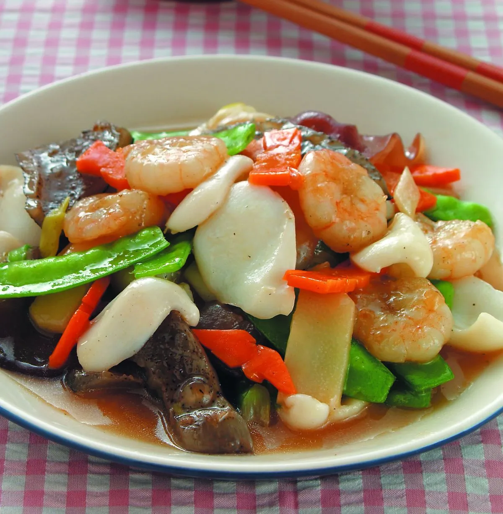
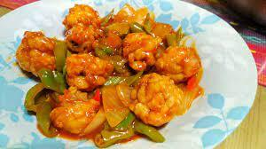

醋溜菊花魚球
在火爐前站6~8小時，只能說汗如雨下，而且洗盤子到腰酸背痛，連站2天腳會抽筋。
真的要向媽媽和廚師致敬，
他們為了家人的胃，下足了心力啊！
完成

蜜汁香酥雞
2. 加入脆酥粉或麵粉拌勻. 3. 再沾上地瓜粉. ...
5. 鍋中入少許油炒香蒜末及辣椒末.
7. 拌炒均勻. 8. 加入雞塊拌勻.
干貝燴三絲
，荷蘭豆摘去老梗洗淨
，備用。 2.蝦仁以1/4茶匙鹽搓洗，沖去鹽份吸乾水份，
再加入所有醃料拌勻。 3.取鍋加水燒開，將作法1的食材（荷蘭豆除外）汆燙後撈出。
| 圖片 | 標題 | 說明 | 體驗廚師的感覺，並不是像外面想像的上電視很光鮮， 在火爐前站6~8小時，只能說汗如雨下，而且洗盤子到腰酸背痛，連站2天腳會抽筋。 真的要向媽媽和廚師致敬，他們為了家人的胃，下足了心力啊！ 這道菜煮起來還蠻有美感的，所以就寫一下囉！ 菊花溜魚球，主要是溜，要酸酸又甜甜的，很下飯喔。
|---|---|---|
|  | 醋溜菊花魚球 |
體驗廚師的感覺，並不是像外面想像的上電視很光鮮， 在火爐前站6~8小時，只能說汗如雨下，而且洗盤子到腰酸背痛，連站2天腳會抽筋。 真的要向媽媽和廚師致敬， 他們為了家人的胃，下足了心力啊！ 完成 |
|
蜜汁香酥雞 |
雞肉切小塊後,再加入醃肉料(醬油、糖、胡椒粉、蛋黃)拌醃10分鐘.
2. 加入脆酥粉或麵粉拌勻. 3. 再沾上地瓜粉. ... 5. 鍋中入少許油炒香蒜末及辣椒末. 7. 拌炒均勻. 8. 加入雞塊拌勻. |
|  | 干貝燴三絲 |
1.花枝肉切斜刀片，海參清理內臟後切斜刀片，沙拉筍、木耳與紅蘿蔔切小片 ，荷蘭豆摘去老梗洗淨 ，備用。 2.蝦仁以1/4茶匙鹽搓洗，沖去鹽份吸乾水份， 再加入所有醃料拌勻。 3.取鍋加水燒開，將作法1的食材（荷蘭豆除外）汆燙後撈出。 |